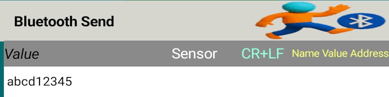
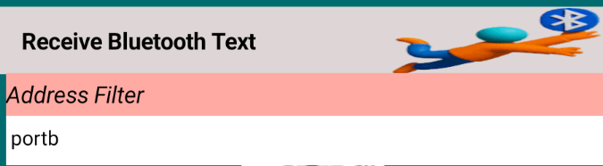
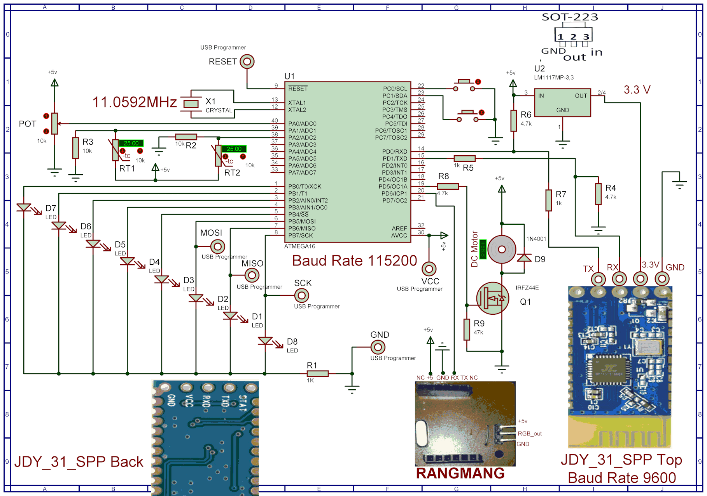
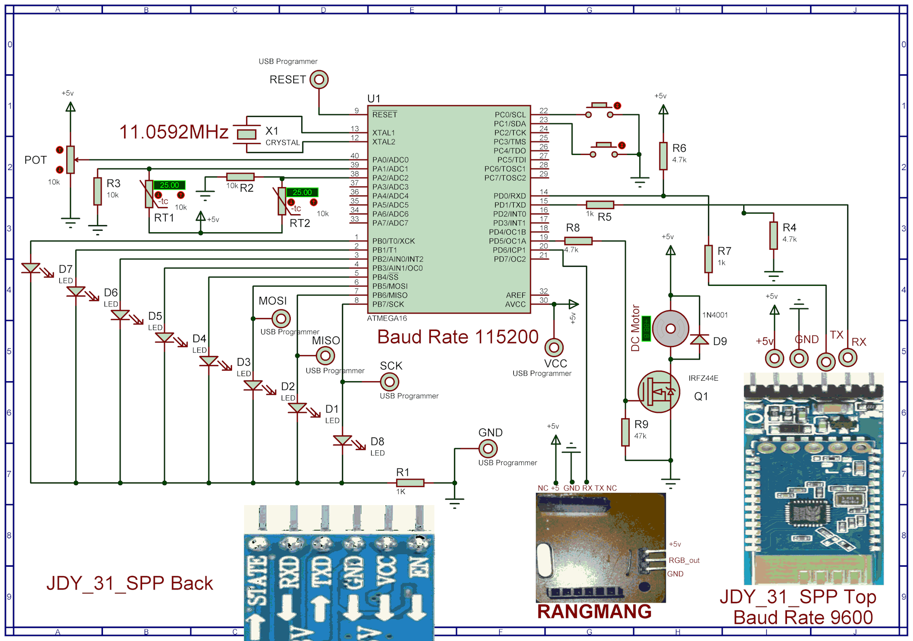
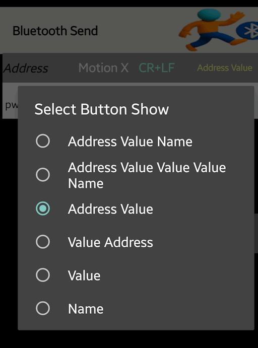
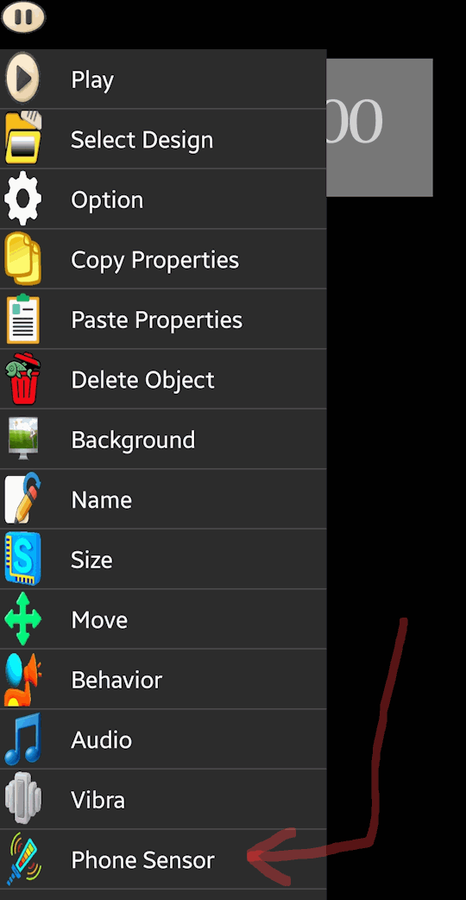
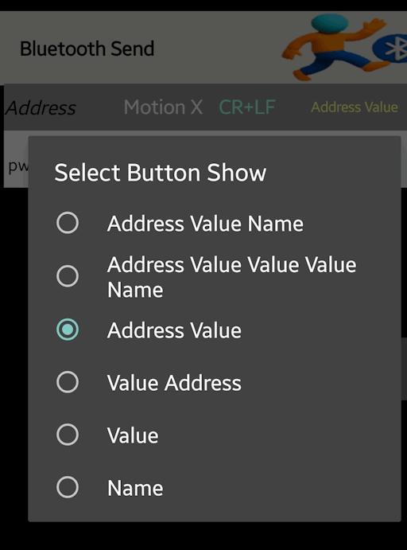
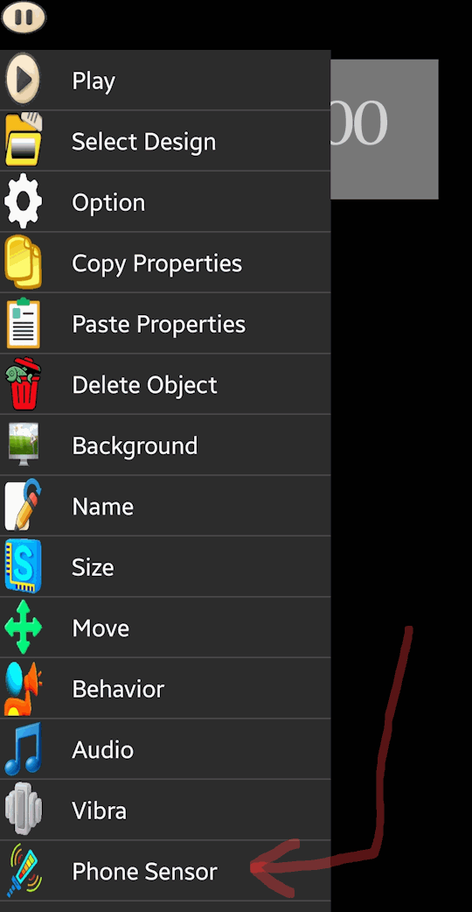

Soifgo has the capability to send and receive serial Bluetooth data in a controlled manner. Therefore, each transmission and reception must include a key or address—either a number or a text string.
Sending: The format should include something like port:1
Receiving: It should be similar, such as volt:24
There are no limitations on sending; this format is used when transmitting data to the microcontroller. However, receiving must include a key or address so that the corresponding configuration button can be displayed.
In the image below, you can see two examples of data transmission:
Free-form transmission: An arbitrary format used for general purposes.
Microcontroller-compatible transmission: A structured format used in this example for communication with the microcontroller.

There are two types of Bluetooth data reception:
Free-form reception
Mainly used to display the received value.
Requires an address or keyword to identify the data.

Numeric (value-based) reception
Used to receive integer values.
Requires an address or keyword, just like free-form reception.
You must define a maximum threshold for the received value.
The minimum value is 0, and the maximum is the limit you define.
Only integer values are accepted—decimal values are not allowed.
In this mode, effects are activated based on the received value.
Bluetooth Serial Data Format in SoiftGo
When sending serial Bluetooth data to SoiftGo—whether from a microcontroller or any other device—you must use a structured format like:
temp1:128
SoiftGo interprets temp1: as the address of the configured button, and 128 as the value to be displayed.
Display Behavior
The value is shown attached to the button name.
You can disable the name display or add a suffix (e.g., degrees).
For example, if the name is #@@, you will see: 128#@@.
The name is purely visual and does not affect effects or logic.
Effect-Only Mode
If you want to activate effects without showing the name or value:
Disable the name display in the button settings.
Disable the value display in the value settings.
In this mode, the button can act like a gauge or needle, functioning with its effect while hiding both label and numeric value.
Sensor Data Transmission via Bluetooth in SoifGo
Another method of Bluetooth transmission in SoifGo allows sending smartphone sensor values to a microcontroller. Currently, three types of sensors are supported:
Light sensor
Motion sensor
Magnetic field sensor
Configuring a Button to Send Sensor Data via Bluetooth
In the next step, go to the Edit mode and add a new button to the interface.
Step-by-Step Setup
Set the button’s behavior to Bluetooth Send.
In the Address field, enter a label such as: pwm1a: (used here to control motor speed).
Click on the Sensor icon and choose the desired input—for example, X-axis motion.
Then click on the Address Label (usually titled “Address Value Name”) and select the same address: pwm1a:.
Live Output Format
Once connected to Bluetooth and in Play Mode, the output will be sent in this format:
pwm1a:513
This means the X-axis motion value has been scaled and offset (as configured earlier) and is now transmitted to the microcontroller under the address pwm1a:
Value Adjustment Logic
To ensure compatibility with microcontrollers that do not support decimals or negative numbers, you can configure a scaling factor and offset:
The following file contains both the BASCOM source and the compiled HEX file for the microcontroller.
Remember to use the HEX file when programming the device.
Do not forget to configure the fuse bits for an external crystal oscillator.
If you encounter issues with BASCOM, you can provide the BASCOM source code to an AI assistant to convert it into Arduino C or any other language of your choice.
This allows you to customize the firmware for your specific project requirements.
With these files, you can either directly program the microcontroller or adapt the source for alternative development environments.
The following file contains the schematic diagram of the microcontroller and the Bluetooth module.
This schematic illustrates the wiring and connections required for proper communication between the two components.
Use the schematic as a reference when assembling your hardware.
Ensure that the power supply and ground lines are correctly connected.
Verify the TX/RX pins between the microcontroller and Bluetooth module for reliable data transfer.
With this schematic, you can confidently set up the hardware portion of your project and integrate it with the provided software examples.

Bluetooth Module Variants
The images illustrate two different versions of the Bluetooth module:
Top image: Bluetooth module without an auxiliary board, operating directly at 3.3V.
Bottom image: Bluetooth module with an auxiliary board, adapted for 5V operation.
Use the appropriate version depending on your microcontroller’s voltage requirements and available power supply.

Proteus Project ZIP File
The provided ZIP archive contains the Proteus simulation project. You can use this file to
customize and adapt the schematic or layout according to your specific requirements.
Extract the ZIP archive to access the full Proteus project.
Open the project in Proteus to modify the schematic, wiring, or component settings.
This allows you to simulate and test your microcontroller and Bluetooth module setup before building the hardware.
By customizing the Proteus project, you can experiment with different configurations and ensure compatibility with your design goals.
Practical Video: SoifGo Communication with Microcontroller
The video below demonstrates the real-world operation and interaction between the SoifGo system and the microcontroller.
It provides a hands-on example of how data is exchanged and processed in practice.


 


